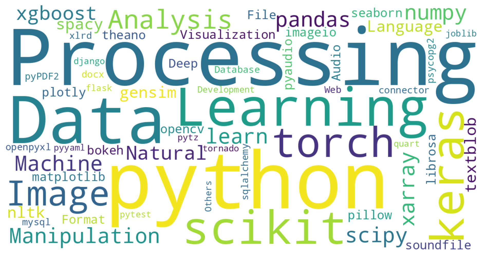

Explore the Python packages driving OpenAI’s ChatGPT Code Interpreter.
Code Interpreter & Python Packages
ChatGPT’s Code Interpreter executes Python code, powered by a multitude of Python packages.
Python, with its vast array of packages, facilitates a diverse range of projects. Here’s a glimpse into the possibilities:
- Data Analysis and Visualization: Analyze and visualize your data offline using packages like pandas, numpy, scipy, xarray, matplotlib, seaborn, plotly, and bokeh.
- Natural Language Processing and Machine Learning: Dive into text data with nltk, spacy, textblob, and gensim, or build machine learning models with scikit-learn, xgboost, keras, and torch.
- Image and Audio Processing: Manipulate and analyze images and audio with pillow, imageio, opencv-python, scikit-image, librosa, pyaudio, and soundfile.
- File Format Manipulation and Web Development: Handle various file formats with openpyxl, xlrd, pyPDF2, python-docx, or build web applications with flask, django, tornado, and quart.
List of Python Packages
Here are the Python packages available in ChatGPT’s Code Interpreter:
Data Analysis and Manipulation:
-
pandas
-
numpy
-
scipy
-
xarray
Machine Learning:
-
scikit-learn
-
xgboost
-
keras
-
torch
Natural Language Processing:
-
nltk
-
spacy
-
textblob
-
gensim
Data Visualization:
-
matplotlib
-
seaborn
-
plotly
-
bokeh
Web Scraping and Network:
-
requests
-
urllib3
-
aiohttp
-
beautifulsoup4
Deep Learning:
-
keras
-
torch
-
theano
Image Processing:
-
pillow
-
imageio
-
opencv-python
-
scikit-image
Audio Processing:
-
librosa
-
pyaudio
-
soundfile
File Format:
-
openpyxl
-
xlrd
-
pyPDF2
-
python-docx
Database:
-
sqlalchemy
-
psycopg2
-
mysql-connector-python
Web Development:
-
flask
-
django
-
tornado
-
quart
Others:
-
pytest
-
joblib
-
pytz
-
pyyaml
All:
['absl-py==1.4.0',
'affine==2.4.0',
'aiofiles==23.1.0',
'aiohttp==3.8.1',
'aiosignal==1.3.1',
'analytics-python==1.4.post1',
'anyio==3.6.2',
'anytree==2.8.0',
'argcomplete==1.10.3',
'argon2-cffi-bindings==21.2.0',
'argon2-cffi==21.3.0',
'arviz==0.15.1',
'asttokens==2.2.1',
'async-timeout==4.0.2',
'attrs==23.1.0',
'audioread==3.0.0',
'babel==2.12.1',
'backcall==0.2.0',
'backoff==1.10.0',
'backports.zoneinfo==0.2.1',
'basemap-data==1.3.2',
'basemap==1.3.2',
'bcrypt==4.0.1',
'beautifulsoup4==4.12.2',
'bleach==6.0.0',
'blinker==1.6.2',
'blis==0.7.9',
'bokeh==2.4.0',
'branca==0.6.0',
'brotli==1.0.9',
'cachetools==5.3.0',
'cairocffi==1.5.1',
'cairosvg==2.5.2',
'camelot-py==0.10.1',
'catalogue==2.0.8',
'certifi==2019.11.28',
'cffi==1.15.1',
'chardet==4.0.0',
'charset-normalizer==2.1.1',
'click-plugins==1.1.1',
'click==8.1.3',
'cligj==0.7.2',
'cloudpickle==2.2.1',
'cmudict==1.0.13',
'comm==0.1.3',
'compressed-rtf==1.0.6',
'countryinfo==0.1.2',
'cryptography==3.4.8',
'cssselect2==0.7.0',
'cycler==0.11.0',
'cymem==2.0.7',
'dbus-python==1.2.16',
'debugpy==1.6.7',
'decorator==4.4.2',
'defusedxml==0.7.1',
'deprecat==2.1.1',
'dill==0.3.6',
'distro-info==0.23ubuntu1',
'dlib==19.22.1',
'docx2txt==0.8',
'ebcdic==1.1.1',
'ebooklib==0.18',
'einops==0.3.2',
'entrypoints==0.4',
'et-xmlfile==1.1.0',
'exchange-calendars==3.4',
'executing==1.2.0',
'extract-msg==0.28.7',
'faker==8.13.2',
'fastjsonschema==2.16.3',
'fastprogress==1.0.3',
'ffmpeg-python==0.2.0',
'ffmpy==0.3.0',
'filelock==3.12.0',
'fiona==1.8.20',
'flask-cachebuster==1.0.0',
'flask-cors==3.0.10',
'flask-login==0.6.2',
'flask==2.3.2',
'folium==0.12.1',
'fonttools==4.39.3',
'fpdf==1.7.2',
'frozenlist==1.3.3',
'future==0.18.3',
'fuzzywuzzy==0.18.0',
'gensim==4.1.0',
'geographiclib==1.52',
'geopandas==0.10.2',
'geopy==2.2.0',
'gradio==2.2.15',
'graphviz==0.17',
'gtts==2.2.3',
'h11==0.14.0',
'h2==4.1.0',
'h5netcdf==1.1.0',
'h5py==3.4.0',
'hpack==4.0.0',
'html5lib==1.1',
'hypercorn==0.14.3',
'hyperframe==6.0.1',
'idna==2.8',
'imageio-ffmpeg==0.4.8',
'imageio==2.28.1',
'imapclient==2.1.0',
'imgkit==1.2.2',
'importlib-metadata==6.6.0',
'importlib-resources==5.12.0',
'iniconfig==2.0.0',
'ipykernel==6.22.0',
'ipython-genutils==0.2.0',
'ipython==8.12.1',
'isodate==0.6.1',
'itsdangerous==2.1.2',
'jax==0.2.28',
'jedi==0.18.2',
'jinja2==3.1.2',
'joblib==1.2.0',
'json5==0.9.11',
'jsonpickle==3.0.1',
'jsonschema==4.17.3',
'jupyter-client==7.4.9',
'jupyter-core==5.1.3',
'jupyter-server==1.23.5',
'jupyterlab-pygments==0.2.2',
'jupyterlab-server==2.19.0',
'jupyterlab==3.4.8',
'keras==2.6.0',
'kerykeion==2.1.16',
'kiwisolver==1.4.4',
'korean-lunar-calendar==0.3.1',
'librosa==0.8.1',
'llvmlite==0.40.0',
'loguru==0.5.3',
'lxml==4.9.2',
'markdown2==2.4.8',
'markdownify==0.9.3',
'markupsafe==2.1.2',
'matplotlib-inline==0.1.6',
'matplotlib-venn==0.11.6',
'matplotlib==3.4.3',
'mistune==2.0.5',
'mizani==0.9.0',
'mne==0.23.4',
'monotonic==1.6',
'moviepy==1.0.3',
'mpmath==1.3.0',
'mtcnn==0.1.1',
'multidict==6.0.4',
'munch==2.5.0',
'murmurhash==1.0.9',
'mutagen==1.45.1',
'nashpy==0.0.35',
'nbclassic==0.5.6',
'nbclient==0.7.4',
'nbconvert==7.3.1',
'nbformat==5.8.0',
'nest-asyncio==1.5.6',
'networkx==2.6.3',
'nltk==3.6.3',
'notebook-shim==0.2.3',
'notebook==6.5.1',
'numba==0.57.0',
'numexpr==2.8.4',
'numpy-financial==1.0.0',
'numpy==1.21.2',
'odfpy==1.4.1',
'olefile==0.46',
'opencv-python==4.5.2.54',
'openpyxl==3.0.10',
'opt-einsum==3.3.0',
'packaging==23.1',
'pandas==1.3.2',
'pandocfilters==1.5.0',
'paramiko==3.1.0',
'parso==0.8.3',
'pathy==0.10.1',
'patsy==0.5.3',
'pdf2image==1.16.3',
'pdfkit==0.6.1',
'pdfminer.six==20200517',
'pdfplumber==0.5.28',
'pdfrw==0.4',
'pexpect==4.8.0',
'pickleshare==0.7.5',
'pillow==8.3.2',
'pip==20.0.2',
'pkgutil-resolve-name==1.3.10',
'platformdirs==3.5.0',
'plotly==5.3.0',
'plotnine==0.10.1',
'pluggy==1.0.0',
'pooch==1.7.0',
'preshed==3.0.8',
'priority==2.0.0',
'proglog==0.1.10',
'prometheus-client==0.16.0',
'prompt-toolkit==3.0.38',
'pronouncing==0.2.0',
'psutil==5.9.5',
'ptyprocess==0.7.0',
'pure-eval==0.2.2',
'py==1.11.0',
'pyaudio==0.2.11',
'pycountry==20.7.3',
'pycparser==2.21',
'pycryptodome==3.17',
'pydantic==1.8.2',
'pydot==1.4.2',
'pydub==0.25.1',
'pydyf==0.6.0',
'pygments==2.15.1',
'pygobject==3.36.0',
'pygraphviz==1.7',
'pylog==1.1',
'pyluach==2.2.0',
'pymc3==3.11.5',
'pymupdf==1.19.6',
'pynacl==1.5.0',
'pypandoc==1.6.3',
'pyparsing==3.0.9',
'pypdf2==1.28.6',
'pyphen==0.14.0',
'pyproj==3.5.0',
'pyprover==0.5.6',
'pyrsistent==0.19.3',
'pyshp==2.1.3',
'pyswisseph==2.10.3.1',
'pytesseract==0.3.8',
'pytest==6.2.5',
'pyth3==0.7',
'python-apt==2.0.1+ubuntu0.20.4.1',
'python-dateutil==2.8.2',
'python-docx==0.8.11',
'python-pptx==0.6.21',
'pyttsx3==2.90',
'pytz-deprecation-shim==0.1.0.post0',
'pytz==2023.3',
'pywavelets==1.4.1',
'pyxlsb==1.0.8',
'pyyaml==6.0',
'pyzbar==0.1.8',
'pyzmq==25.0.2',
'qrcode==7.3',
'quart==0.17.0',
'rarfile==4.0',
'rasterio==1.2.10',
'rdflib==6.0.0',
'regex==2023.5.5',
'reportlab==3.6.1',
'requests-unixsocket==0.2.0',
'requests==2.29.0',
'resampy==0.4.2',
'scikit-image==0.18.3',
'scikit-learn==1.0',
'scipy==1.7.3',
'seaborn==0.11.2',
'semver==3.0.0',
'send2trash==1.8.2',
'sentencepiece==0.1.99',
'setuptools==45.2.0',
'shap==0.39.0',
'shapely==1.7.1',
'six==1.14.0',
'slicer==0.0.7',
'smart-open==6.3.0',
'sniffio==1.3.0',
'snuggs==1.4.7',
'sortedcontainers==2.4.0',
'soundfile==0.10.2',
'soupsieve==2.4.1',
'spacy-legacy==3.0.12',
'spacy==3.1.7',
'speechrecognition==3.8.1',
'srsly==2.4.6',
'stack-data==0.6.2',
'statsmodels==0.12.2',
'svglib==1.1.0',
'svgwrite==1.4.1',
'sympy==1.8',
'tables==3.6.1',
'tabula==1.0.5',
'tabulate==0.8.9',
'tenacity==8.2.2',
'terminado==0.17.1',
'text-unidecode==1.3',
'textblob==0.15.3',
'textract==1.6.4',
'theano-pymc==1.1.2',
'thinc==8.0.17',
'threadpoolctl==3.1.0',
'tifffile==2023.4.12',
'tinycss2==1.2.1',
'toml==0.10.2',
'tomli==2.0.1',
'toolz==0.12.0',
'torch==1.10.0',
'torchaudio==0.10.0',
'torchtext==0.6.0',
'torchvision==0.11.1',
'tornado==6.3.1',
'tqdm==4.64.0',
'traitlets==5.9.0',
'trimesh==3.9.29',
'typer==0.4.2',
'typing-extensions==4.5.0',
'tzdata==2023.3',
'tzlocal==4.3',
'unattended-upgrades==0.1',
'urllib3==1.25.8',
'wand==0.6.11',
'wasabi==0.10.1',
'wcwidth==0.2.6',
'weasyprint==53.3',
'webencodings==0.5.1',
'websocket-client==1.5.1',
'websockets==10.3',
'werkzeug==2.3.3',
'wheel==0.34.2',
'wordcloud==1.8.1',
'wrapt==1.15.0',
'wsproto==1.2.0',
'xarray-einstats==0.5.1',
'xarray==2023.1.0',
'xgboost==1.4.2',
'xlrd==1.2.0',
'xlsxwriter==3.1.0',
'xml-python==0.4.3',
'yarl==1.9.2',
'zipp==3.15.0',
'zopfli==0.2.2']